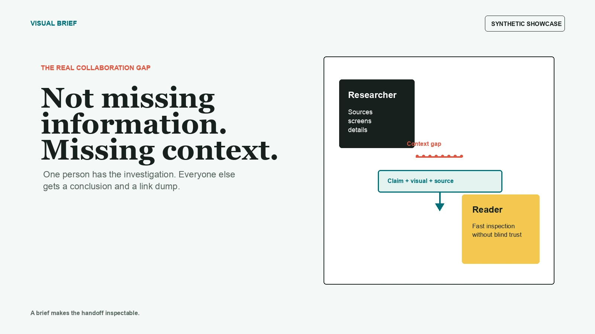

01
Evidence reply
Answer a stakeholder question with the conclusion first, then only the evidence that changes the decision.

Evidence-first skill for AI agents
Turn deep context into a brief someone can inspect.
A screenshot makes the important thing easy to see. A canonical link keeps it possible to verify or challenge.
Visual Brief takes the decisive sentence, control, state, or chart value and puts it next to a concise explanation. The source stays named and linkable. The boundary stays visible.

A reviewable chain

01
Answer a stakeholder question with the conclusion first, then only the evidence that changes the decision.
02
Put each image directly after the action it removes ambiguity from, then finish on a visible success state.
03
Teach an idea with source-backed screenshots and clearly labeled illustrative diagrams or generated art.
Draft first
Visual Brief creates local deliverables, WebP assets, previews, Block Kit JSON, Notion-ready Markdown, and channel drafts. Uploading, sending, posting, form submission, or public repository creation remains an explicit approval step.
The installable skill is separate from this showcase site, its images, synthetic examples, and public evaluation materials.
Open the repository
npx skills add joeeeeey/visual-brief --skill visual-brief --agent '*' --yes